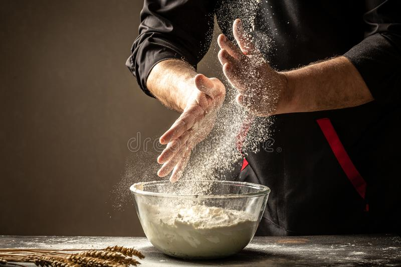
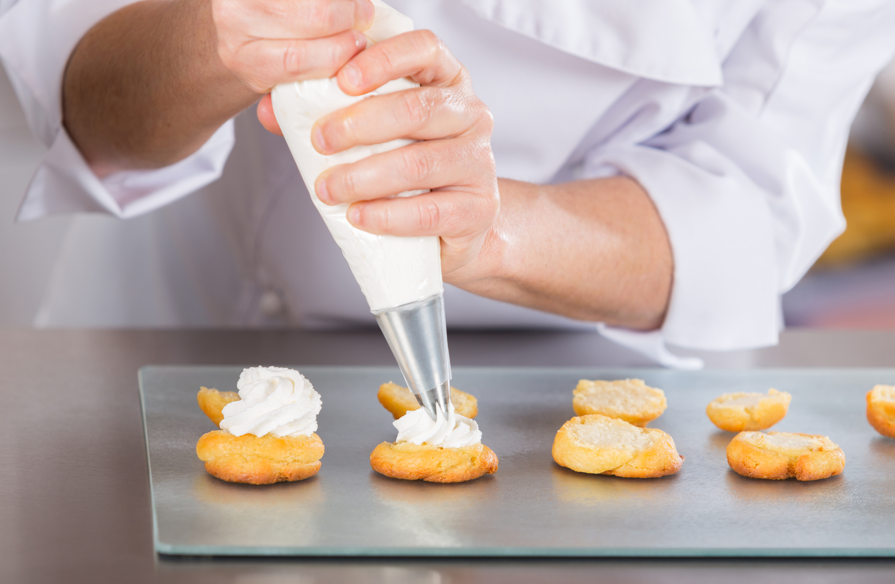
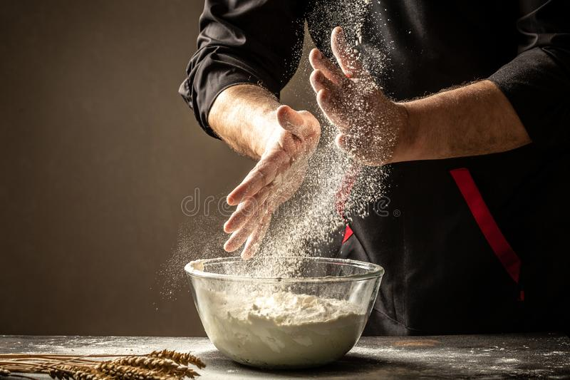
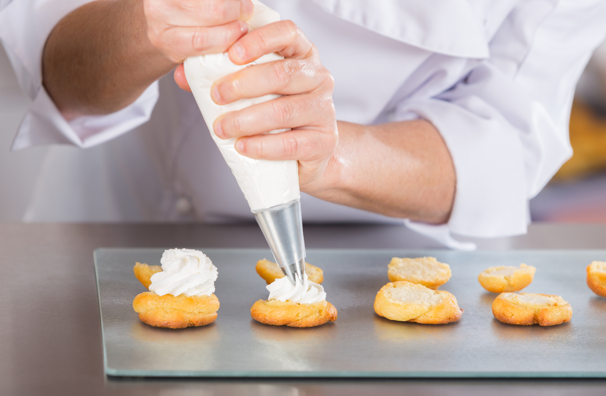

Lo dulce de la vida
La repostería es el arte de hacer la vida más dulce, apartir de pinceladas de azucar y tintes variados como la riqueza natural,que se funden en calor y frío para dar como resultado la mayor sensación de texturas y sabores, de una armonía tal, que es capáz de llevar al hombre a descubrir que la vida es mucho más que una simple cotidianidad. Como en la vida, a veces sale bien y otras veces por pequeños errores sale mal, pero siempre hay una oportunidad para volver a intentarlo. La única ley cierta es no limitarse en los manuales, el verdadero límite es infinitamente extenso pues este es determinado por nuestra propia creatididad.
A lo largo de toda la historia ha acompañado al hombre, desde la brioche de Maria Antonietta hasta los chocolates de Ernst Knam,desde el manjar turco de las Cronica de narnia hasta los beignets de la Princesa y el Sapo, desde el gelato hasta las fuentes de chocolate, desde el pan forte italiano hasta el arroz con leche español, la repostería siempre ha estado entre nosotros. Es adecuada para cuanquier ocasión no importa si es un postre casero o uno sofisticado, lo que importa es el sentido por el que se encuentra allí. No tiene una edad que la determine, desde chicos hasta abuelos se encantan con la magia creada por una simple pizca de amor. La tradición no es una barrera, al contrario, es su identidad pues a través de ella podemos conectarnos con nuestro pasado y construir nuestro futuro.
Ahora es momento de ponerse el delantal y colocar en la mesa todos los componentes de tu paleta de sabores, es tiempo de darle rienda suelta de tú creatividad, moviendo el pincel con mucho amor, convirtiendo el cuadro en el más dulce pedacito de alegría.
 


